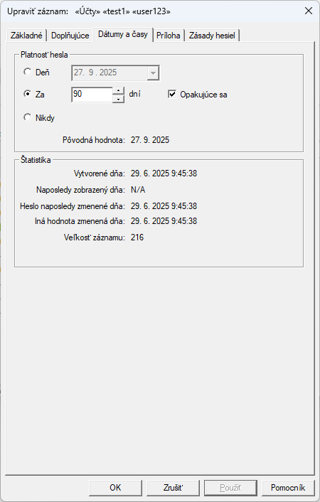
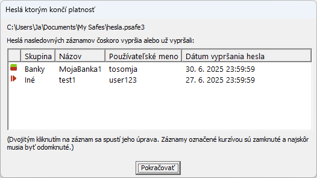

Zásady hesiel: pravidlá generovania náhodných hesiel
Karta Dátumy a časy

Platnosť hesla: Ak chcete nastaviť dátum vypršania platnosti hesla,
zadajte požadovaný dátum vypršania platnosti, buď
ako absolútny dátum (napr. "17. marca 2027") alebo relatívny od dnešného dňa
(napr. "Za 30 dní"). Keď sa blíži dátum vypršania platnosti,
Password Safe vás pri spustení upozorní, že heslo
by sa malo zmeniť, a tiež označí položku odlišnou farbou.
Ak vyberiete možnosť "Za N dní", môžete zadať "Opakujúce sa"
vypršanie platnosti. To spôsobí, že sa nový dátum vypršania platnosti vypočíta
na základe zadaného počtu dní a zmeny hesla
záznamu. Napríklad, ak vytvoríte položku 1. januára a zadáte 5-dňovú opakujúcu sa platnosť,
dostanete oznámenie o platnosti od 6. januára. Ak zmeníte heslo 7. januára,
nová platnosť bude 12. januára (5 dní po nastavení hesla).
Ak chcete zrušiť platnosť, vyberte možnosť "Nikdy".
Štatistika: Tieto polia určené len na čítanie pomáhajú sledovať, kedy
bol vybraný záznam vytvorený, kedy bolo heslo naposledy zmenené atď.
Password Safe pri spustení upozorní používateľa v prípade,
že platnosť hesla nejakých záznamov vyprší alebo už vypršala. Zmena hesla je potom zodpovednosťou používateľa.

Taktiež je k dispozícii položka menu ("Zobraziť > Zobraziť iba > Záznamy s nastaveným dátumom platnosti"),
ktorá spustí interný filter na zobrazenie všetkých záznamov s nastaveným dátumom vypršania hesla,
či už ešte nevypršal, čoskoro vyprší alebo už vypršal.
Opätovným výberom tejto položky ponuky sa filter odstráni a zobrazí sa normálne zobrazenie.